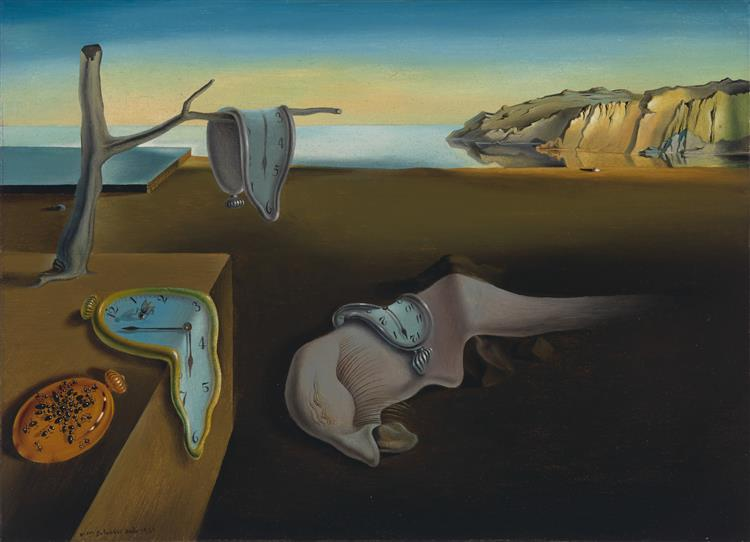

Autor: Salvador Dalí.
Fecha: 1931.
Ubicación: MoMA, New York.
Técnica: Protocubismo.
Un simple paisaje marino (típico del Cadaqués daliniano, con el cabo Creus y su costa escarpada) en el que hay una escena insólita: una extraña criatura durmiendo o quizás inerte sobre la arena (hay quien ve un autorretrato del pintor) y unos relojes que se derriten sobre ella y sobre otros elementos del cuadro. Según el propio Dalí, que contaba con 28 añitos al pintarlo, dos cosas fueron su inspiración para este cuadro. En primer lugar se inspiró en los quesos camembert (“tiernos, extravagantes, solitarios y paranoico-críticos”) y otra inspiración fue la teoría de la relatividad de Einstein. Sabemos que Dalí era un enamorado de la ciencia y siguió el trabajo del científico con curiosidad. Al parecer los relojes derritiéndose son un símbolo inconsciente de la relatividad del espacio y el tiempo. Son relojes muy realistas que siguen marcando la hora (más o menos las 6 PM). La técnica de Dalí era muy académica y sus cuadros parecen sueños de verdad. Sabía hacer lo que él llamó “fotografías de sueños pintadas a mano”.
Actualizado hace 5 días.